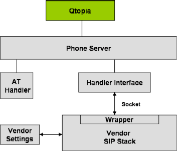

| Home · All Classes · Annotated · Functions |
This document provides an introduction to the Qtopia VoIP infrastructure.
VoIP is a Qtopia application integrated with the Qtopia server. The key features are:
An overview of the VoIP Framework Architecture is provided in the following diagram:

The handler interface communicates with vendor SIP stacks via the vendor wrapper software. For integration information refer to VoIP Integration.
Qtopia VoIP is integrated with the following applications:
Call History is a Qtopia module providing the history of all calls received, missed and dialled. VoIP call details are displayed and calls can be initiated from the Call History screen.
Qtopia provides a basic settings application for VoIP. However, integration of a settings application and design of the settings GUI is largely the responsibility of the vendor. The following describes commonly supported functionality:
The screen displays comprising the settings application are described in the following table:
| Display Name | Description |
|---|---|
| Identity | Allows the user to set
|
| Proxy | Allows the user to set
|
| Advanced | Allows the user to set:
|
Quick Dial component is a Qtopia module that provides a dialing facility from the Home screen and is integrated with the Qtopia phone edition. VoIP identifiers are taken as input Call History matches are presented and the VoIP call is initiated.
The Contacts application stores, edits, and displays the VoIP identifier and status of a contact. It interacts with the VoIP framework for:
The Contact application receives updates from VoIP server regarding VoIP user status (online/offline) and is responsible for keeping it up-to-date in its database.
| Copyright © 2007 Trolltech | Trademarks | Qtopia 4.2.2 |